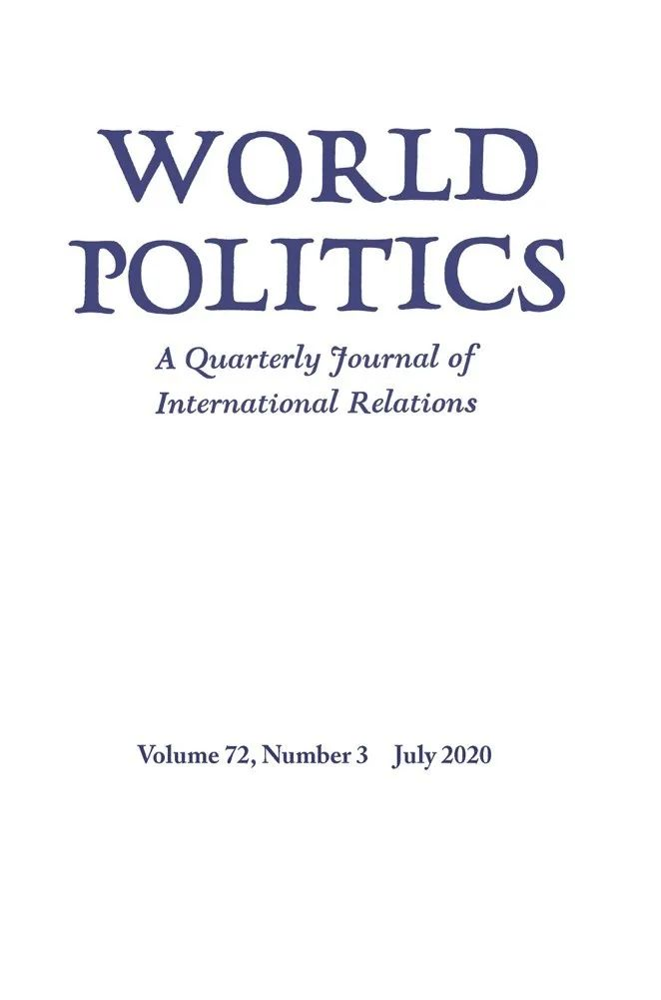

收录于合集 #新刊速递 123个


期刊简介

World Politics（《世界政治》）创刊于1948年，是享誉国际的政治科学季刊，内容涵盖国际关系和政治科学的各个领域，其主编是Deborah J. Yashar。该期刊欢迎的投稿类型有具有理论和实证贡献的研究类文章，以及有关国际关系和比较政治问题的评论性文章。2019年该期刊的影响因子为2.5，在95种国际关系类期刊中位列第15名，在180种政治科学类期刊中位列第36名。
本期编委
【编译】 崔宇涵 李玉婷 陈勇 王川 王泽尘
【校对】 周玫琳
【审核】 施榕
【排版】 高思慧

本期目录
1. 武装冲突中非法流动的逻辑：解释哥伦比亚暴力非国家团体互动的差异
The Logic of Illicit Flows in Armed Conflict: Explaining Variation in Violent Nonstate Group Interactions in Colombia
2. 地方秩序、治安和贿赂：来自印度的证据
Local Order, Policing, and Bribes: Evidence from India
3. 附庸国政权的存续：外部支持和军队忠诚，1946-2010
The Durability of Client Regimes: Foreign Sponsorship and Military Loyalty, 1946–2010
4. 企业权力的制度性来源
Institutional Sources of Business Power
5. 一座叙利亚城市中的网络、非正式治理与种族暴力
Networks, Informal Governance, and Ethnic Violence in a Syrian City
01
武装冲突中非法流动的逻辑：解释哥伦比亚暴力非国家团体互动的差异
【题目】 The Logic of Illicit Flows in Armed Conflict: Explaining Variation in Violent Nonstate Group Interactions in Colombia
【作者】 Annette Idler，牛津大学政治与国际关系资深研究员，战争性质变化项目研究主任，彭布罗克学院高级研究员。
【摘要】 为什么暴力非国家组织在武装冲突中互动的方式有所差异？在世界范围内武装冲突和有组织犯罪频发的不稳定地区，这种组织有时会与对立的团伙达成合作安排。在同样不稳定的环境下，暴力的非国家组织会在某些地区建立稳定、长期的关系，而在另一些地区进行不稳定的、短期的安排，并在其他地方彼此争斗。尽管这种矛盾的安排加剧和延续了战争，但既有的集中于领土和动机的群体互动理论忽视了它们的共同特征。在质疑既有文献只关注冲突动态的基础上，作者认为，非法流动的空间分布影响上述互动的差异。通过绘制可卡因供应链网络，作者表明长期安排在生产地点占优势，而短期安排集中在贩运节点。本文以过程追踪法论证了非法流动的逻辑如何在群体合作安排中产生差异。这项历时多年、横跨多场域的研究包括了600多个在哥伦比亚偏远且饱受战争蹂躏的边境地区进行的采访。
Why is there variation in how violent nonstate groups interact in armed conflict? Where armed conflict and organized crime converge in unstable regions worldwide, these groups sometimes enter cooperative arrangements with opposing groups. Within the same unstable setting, violent nonstate groups forge stable, long-term relations with each other in some regions, engage in unstable, short-term arrangements in others, and dispute each other elsewhere. Even though such paradoxical arrangements have intensified and perpetuated war, extant theories on group interactions that focus on territory and motivations overlook their concurrent character. Challenging the literature that focuses on conflict dynamics alone, the author argues that the spatial distribution of illicit flows influences how these interactions vary. By mapping cocaine supply chain networks, the author shows that long-term arrangements prevail at production sites, whereas short-term arrangements cluster at trafficking nodes. The article demonstrates through process tracing how the logic of illicit flows produces variation in the groups’ cooperative arrangements. This multiyear, multisited study includes over six hundred interviews in and about Colombia’s remote, war-torn borderlands.
【编译】 崔宇涵
【校对】 周玫琳
02
地方秩序、治安和贿赂：来自印度的证据
【题目】 Local Order, Policing, and Bribes: Evidence from India
【作者】 Juan Fernando Tellez，南卡罗来纳大学政治学助理教授；Erik Wibbels，杜克大学政治学教授；Anirudh Krishna，杜克大学政治学教授。
【摘要】 日常治安代表着公民和国家之间一种基本的互动。然而，即使在能力最强的国家，不同社区之间的地方治安也有很大差异。作者试图理解这种差异，并做出三点贡献：首先，作者将社区和个人概念化为网络，他们或多或少都要求高水平的治安能力；其次，作者提供了来自印度一百六十多个贫民窟、八千户家庭和一百七十个非正式邻里领导人（neighborhood leaders）的有关当地治安的原始调查数据和半结构式访谈，这些信息有助于开展新兴的关于比较治安和秩序的新兴实证工作；第三，作者发现联系紧密的个人和社区对于地方治安表现出更大的信心和更高的满意度。至关重要的是，这些差异并不是由于当地冲突的发生率较低，而是因为其利用邻里领导人与警察协调的能力更强。本文将（理论）分析与经验（研究）相结合，有助于深入了解个人和社区经验接触的警察会在什么条件下成为租金征收者或中立的秩序供给者。
Day-to-day policing represents a fundamental interface between citizens and states. Yet even in the most capable states, local policing varies enormously from one community to the next. The authors seek to understand this variation and in doing so make three contributions: First, they conceptualize communities and individuals as networks more or less capable of demanding high-quality policing. Second, they present original survey data and semistructured interviews on local policing from over one hundred sixty slums, eight thousand households, and one hundred seventy informal neighborhood leaders in India that contribute to the nascent empirical work on comparative policing and order. Third, they find evidence that well-connected individuals and densely connected neighborhoods express greater confidence in and satisfaction with local policing. Critically, these differences do not appear to be a function of a lower propensity for local conflict but rather of an increased capacity to leverage neighborhood leaders to mediate relations with the police. The combination of analytics and empirics in this article provides insight into the conditions under which individuals and communities experience the police as expropriators of rents or neutral providers of order.
【编译】 李玉婷
【校对】 周玫琳
03
附庸国政权的存续：外部支持和军队忠诚，1946-2010
【题目】 The Durability of Client Regimes: Foreign Sponsorship and Military Loyalty, 1946–2010
【作者】 Adam E. Casey，现密歇根大学维泽新兴民主国家研究中心（Weiser Center for Emerging Democracies at the University of Michigan）研究员，2020年在多伦多大学获得博士学位。主要研究议题包括外部支持和威权政体的延续、军政关系的比较研究、大国对外政策以及民主化。
【摘要】 传统观点认为，身为强权的庇护者会支持附庸国的独裁政权。但总体而言这只是假设，而并没有系统分析。本文利用战后所有附庸国独裁政权的原始数据集，首次全面分析了外部支持与威权政体生存之间的关系。结果表明，来自西方强国——美国、法国和英国——的支持与附庸国政权的生存没有关系。相反，只有苏联的支持降低了政权崩溃的风险。作者通过考虑外国支持对军事政变可能性的影响来解释这种差异。作者认为，通过实施一系列高效的预防政变的策略，苏联直接帮助了它的附庸国。相比之下，美国及其盟友并未提供此类援助，使得附庸政权很容易被军方推翻。
Conventional wisdom holds that great power patrons prop up client dictatorships. But this is generally assumed rather than systematically analyzed. This article provides the first comprehensive analysis of the relationship between foreign sponsorship and authoritarian regime survival, using an original data set of all autocratic client regimes in the postwar period. The results demonstrate that patronage from Western powers—the United States, France, and the United Kingdom—is not associated with client regime survival. Rather, it’s only Soviet sponsorship that reduced the risk of regime collapse. The author explains this variation by considering the effects of foreign sponsorship on the likelihood of military coups d’état. He argues that the Soviet Union directly aided its clients by imposing a series of highly effective coup prevention strategies. By contrast, the US and its allies didn’t provide such aid, leaving regimes vulnerable to military overthrow.
【编译】 陈勇
【校对】 周玫琳
04
企业权力的制度性来源
【题目】 Institutional Sources of Business Power
【作者】 Marius R. Busemeyer，德国康斯坦茨大学政治学教授；Kathleen Thelen，麻省理工学院福特讲座教授。
【摘要】 近年来，有关在后工业政治经济中企业的作用与企业权力来源的争论再度升温。学者们通常将企业权力的来源划分为结构性来源与工具性来源两种，前者同企业在资本主义经济中的特权地位相联系，后者则与企业的直接游说有关。作者认为，这种划分忽视了企业权力的第三种重要来源——制度性企业权力。当国家行为体将公共职能委托给私营企业行为体时，制度性企业权力就得以产生。随着时间的推移，通过政策反馈与锁定效应，制度性企业权力会促成国家对私营企业（在公共服务中）维持承诺的不对称依赖。本文阐述了这一观点背后的理论观点，并以制度性企业权力在德国、瑞典和美国的教育领域中的不断增长作为经验案例。
Recent years have seen a revival of debates about the role of business and the sources of business power in postindustrial political economies. Scholarly accounts commonly distinguish between structural sources of business power, connected to its privileged position in capitalist economies, and instrumental sources, related to direct forms of lobbying by business actors. The authors argue that this distinction overlooks an important third source of business power, which they conceptualize as institutional business power. Institutional business power results when state actors delegate public functions to private business actors. Over time, through policy feedback and lock-in effects, institutional business power contributes to an asymmetrical dependence of the state on the continued commitment of private business actors. This article elaborates the theoretical argument behind this claim, providing empirical examples of growing institutional business power in education in Germany, Sweden, and the United States.
【编译】 王川
【校对】 周玫琳
05
一座叙利亚城市中的网络、非正式治理与种族暴力
【题目】 Networks, Informal Governance, and Ethnic Violence in a Syrian City
【作者】 Kevin Mazur，美国西北大学政治系访问助理教授。
【摘要】 在跨国研究中，种族排斥与对现有政权的暴力挑战密切相关。但在次国家层面上，显著差异仍然存在——并非所有被排斥种族中的成员都会参与挑战。本文通过网聚于族群内部的当地社群的网络属性来解释族群内部的差异，并解释了政权与部分被排斥人口建立的非正式联系。在成员紧密相连、对国家管控资源缺乏网络性获取途径的当地社群，被排斥的种族群体内部的动员最有可能发生。本文以2011年叙利亚城市胡姆斯的起义为例，展示了叙利亚当局管理胡姆斯市逊尼派人口的策略如何塑造了挑战的模式。一方面，国家对城市外围地区自发定居点的容忍有助于形成密集的网络联系。另一方面，当局与（民间）习俗上的权威领袖的非正式谈判利用了这些关系来管理当地人口。这些谈判无法承受当局对挑战者使用暴力，这意味着这同一批本地网络也成为推动和维持代价高昂的反政权动员的关键因素。
In cross-national studies, ethnic exclusion is robustly associated with the onset of violent challenge to incumbent regimes. But significant variation remains at the subnational level—not all members of an excluded ethnic group join in challenge. This article accounts for intra-ethnic group variation in terms of the network properties of local communities, nested within ethnic groups, and the informal ties that regimes forge to some segments of the ethnically excluded population. Mobilization within an excluded ethnic group is most likely among local communities where members are densely linked to one another and lack network access to state-controlled resources. Drawing on a case study of the Syrian city of Homs in the 2011 uprising, this article demonstrates how the Syrian regime’s strategies of managing the Sunni population of Homs shaped patterns of challenge. On the one hand, the state’s toleration of spontaneous settlements on the city’s periphery helped to reproduce dense network ties. On the other hand, the regime’s informal bargains with customary leaders instrumentalized those ties to manage local populations. These bargains could not withstand the regime’s use of violence against challengers, which meant that these same local networks became crucial factors in impelling and sustaining costly antiregime mobilization.
【编译】王泽尘
【校对】周玫琳
文章观点不代表本平台观点，本平台评译分享的文章均出于专业学习之用, 不以任何盈利为目的，内容主要呈现对原文的介绍，原文内容请通过各高校购买的数据库自行下载
**
**
**
**
**
**
添加 “国小政”微信
获取最新资讯


国政学人
支持学术公益与知识传播
微信扫一扫赞赏作者 __赞赏
已喜欢，对作者说句悄悄话
取消 __
发送给作者
发送
最多40字，当前共字
上一页 1/3 下一页
长按二维码向我转账
支持学术公益与知识传播
受苹果公司新规定影响，微信 iOS 版的赞赏功能被关闭，可通过二维码转账支持公众号。